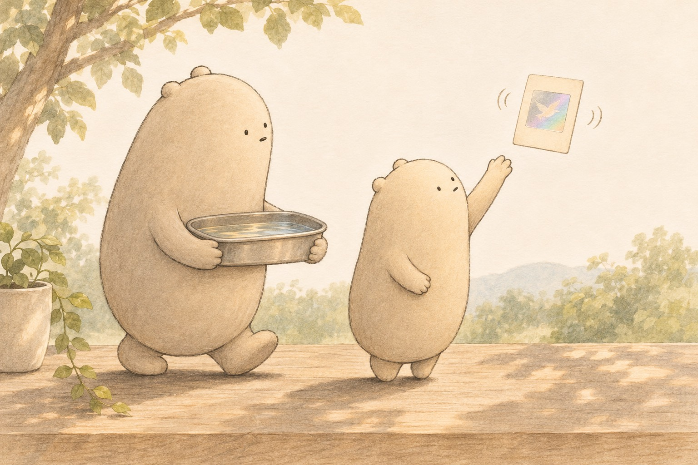

Today’s poem

The Bird Who Lives in a Card
Little Wonderer found a small bird in a card,
not painted, not printed, not stuck on too hard.
Tip it this way, and you'll see its left wing.
Tip it that way, and its right! What a thing!
“It’s ripples,” the big one said, filling a pan.
“Tap twice in the water as fast as you can.
Where bumps meet with bumps, they jump up with glee;
where bumps meet with dips, they go flat as can be.”
The film doesn’t hold any bird, any beak,
just stripes upon stripes far too tiny to peek.
Snap it in two, and here’s what you’ll find:
each half keeps the whole bird. (The bird doesn’t mind.)
So Big Wonderer whispered, “Stand still as a stone,
for one wiggle will smudge every stripe that we own.”
The little one froze, not a sneeze, not a sound,
and a bird made of light turned slowly around.